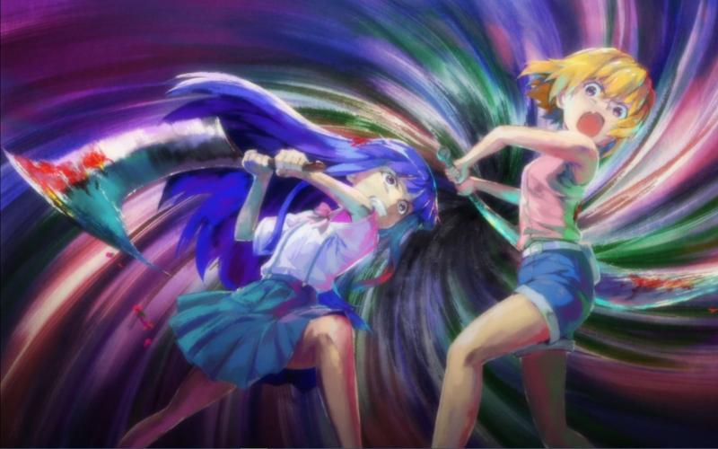

1L 留给 角行
重新发一下，会慢慢放出来~好像发帖太快会被系统删除？
重新发一下，会慢慢放出来~好像发帖太快会被系统删除？
1. A药版本
将目前漫画中已经服下A药的各个角色罗列如下，可以区分出至少四个版本的A药。
①工藤新一服药前头上是有伤口在流血的，Gin下手很重；药物作用时感觉身体热到要融化；变小之后伤口还在，但在见到小兰前就已经愈合。宫野志保服药细节没有描述，但从画面上看与新一类似，都是融化冒烟的样子。这一版A药的主要作用是让身体幼儿化（参照小哀描述），疑似具有冻龄效果。
②Vermouth疑似服用过A药，主要表征为冻龄；同时疑似具有伤口快速愈合的能力（纽约篇受到的枪击第二天，似无包扎痕迹，仅用手捂着右腹部）。目前尚不知道这一版A药是否有其他副作用。
③世良玛丽服药后出现明显的呼吸不畅现象，变小后不断地咳嗽，房间内需要放置加湿器。
④阿曼达和羽田浩司服药后服药后都出现明显的呼吸不畅现象。尤其是羽田浩司，其遗体在被黑田兵卫移动过之后，口鼻开始出血，疑似表现出窒息征象（这里画面上就是血，若狭也是因为血腥味想起的羽田）。
APTX4869的理论核心是程序性细胞凋亡与快速细胞再生的平衡。但是这里有一个问题，人体内有不可再生的永久细胞，包括神经细胞、心肌细胞和骨骼肌细胞。从小哀的描述来看，神经细胞本身就是不变的，但另外两种细胞漫画中没有直接提及。其中骨骼肌细胞姑且不论，心肌细胞大量凋亡会导致急性左心衰、急性肺水肿，引发呼吸困难现象，也许这就是第④类半成品A药致死的直接原因。同时由于A药成分在体内降解，警方可能会将被害人归为病理性死亡（像羽案这种明显的谋杀案除外），这也是行动组理解中组织给他们派发A药的缘由。
第①类A药已经能起到返老还童的效果，可能是克服了心肌细胞的凋亡问题，或者找到方法诱发心肌细胞的再分化。从工藤新一变大变小的感受来看，仅仅是出现心脏狂跳症状，几乎未产生呼吸方面的问题。
第③类A药明显介于成品和半成品之间，玛丽服药时的症状和第④类半成品A药服药效果类似。服药后玛丽出现咳嗽的症状，可能是心衰导致的，也可能是部分细胞异常凋亡，例如嗜酸粒细胞凋亡被抑制可能会诱发支气管哮喘。玛丽是柯南时间线中最晚服下A药的角色，但从药效来看，明显是比工藤新一服下的第①版A药差的。猜测是Sherry逃亡后，剩余团队打造出来的劣化版A药，唯一的优点可能是目标年龄被调整到了初中生年纪。
第②类A药的描述较少，不确定是原年龄冻龄，还是第①类A药将目标年龄调整至壮年后冻龄。但应该是十七年前宫野夫妇时代最后一版A药，前者的可能性更大。A药名单上大多数名字应该都属于宫野夫妇时代第④类A药的服用者。
以上四类均不是组织目标中的A药。组织的目标是让时光倒流、让死者复生。具体而言，应当是将乌丸莲耶这个本应该已经死掉的人，从死亡的边缘线上拉回壮年，并保持长生不老。感觉上更像是第①类A药的改进版本。
将目前漫画中已经服下A药的各个角色罗列如下，可以区分出至少四个版本的A药。
①工藤新一服药前头上是有伤口在流血的，Gin下手很重；药物作用时感觉身体热到要融化；变小之后伤口还在，但在见到小兰前就已经愈合。宫野志保服药细节没有描述，但从画面上看与新一类似，都是融化冒烟的样子。这一版A药的主要作用是让身体幼儿化（参照小哀描述），疑似具有冻龄效果。
②Vermouth疑似服用过A药，主要表征为冻龄；同时疑似具有伤口快速愈合的能力（纽约篇受到的枪击第二天，似无包扎痕迹，仅用手捂着右腹部）。目前尚不知道这一版A药是否有其他副作用。
③世良玛丽服药后出现明显的呼吸不畅现象，变小后不断地咳嗽，房间内需要放置加湿器。
④阿曼达和羽田浩司服药后服药后都出现明显的呼吸不畅现象。尤其是羽田浩司，其遗体在被黑田兵卫移动过之后，口鼻开始出血，疑似表现出窒息征象（这里画面上就是血，若狭也是因为血腥味想起的羽田）。
APTX4869的理论核心是程序性细胞凋亡与快速细胞再生的平衡。但是这里有一个问题，人体内有不可再生的永久细胞，包括神经细胞、心肌细胞和骨骼肌细胞。从小哀的描述来看，神经细胞本身就是不变的，但另外两种细胞漫画中没有直接提及。其中骨骼肌细胞姑且不论，心肌细胞大量凋亡会导致急性左心衰、急性肺水肿，引发呼吸困难现象，也许这就是第④类半成品A药致死的直接原因。同时由于A药成分在体内降解，警方可能会将被害人归为病理性死亡（像羽案这种明显的谋杀案除外），这也是行动组理解中组织给他们派发A药的缘由。
第①类A药已经能起到返老还童的效果，可能是克服了心肌细胞的凋亡问题，或者找到方法诱发心肌细胞的再分化。从工藤新一变大变小的感受来看，仅仅是出现心脏狂跳症状，几乎未产生呼吸方面的问题。
第③类A药明显介于成品和半成品之间，玛丽服药时的症状和第④类半成品A药服药效果类似。服药后玛丽出现咳嗽的症状，可能是心衰导致的，也可能是部分细胞异常凋亡，例如嗜酸粒细胞凋亡被抑制可能会诱发支气管哮喘。玛丽是柯南时间线中最晚服下A药的角色，但从药效来看，明显是比工藤新一服下的第①版A药差的。猜测是Sherry逃亡后，剩余团队打造出来的劣化版A药，唯一的优点可能是目标年龄被调整到了初中生年纪。
第②类A药的描述较少，不确定是原年龄冻龄，还是第①类A药将目标年龄调整至壮年后冻龄。但应该是十七年前宫野夫妇时代最后一版A药，前者的可能性更大。A药名单上大多数名字应该都属于宫野夫妇时代第④类A药的服用者。
以上四类均不是组织目标中的A药。组织的目标是让时光倒流、让死者复生。具体而言，应当是将乌丸莲耶这个本应该已经死掉的人，从死亡的边缘线上拉回壮年，并保持长生不老。感觉上更像是第①类A药的改进版本。
2. 解药为什么与感冒相关
宫野厚司相关理论在三十年前正式提出，然后接受了赞助者的支持，进入白鸠制药，总共5年的时间里，研究的主要是廉价感冒药。也许这种感冒药就是所有A药的雏形。结合女儿节篇小哀自述，宫野家族想做的可能是【能去除灾厄、去除病痛】的万能药，利用的就是程序性细胞死亡与快速再生的平衡。
在乌丸集团干预后，A药的研究方向发生了明显的变化，但和感冒一词还是依稀有着联系。柯南第一次变大时发现了偏方【感冒+白干儿】可以暂时解除变小，不过（可能）具有明显的抗药性，第二次就不起作用了。柯南之所以服下白干儿，是因为平次认为这种方法可以治疗感冒。
但是，根据柯南自己描述来看，感冒不仅没好，反而加重了。正常情况下，喝酒当然治不好感冒，酒精会加重心肺负担，可能小感冒会因为新陈代谢加快、大量出汗而缓解不适状态，但治愈感冒实际上靠的是患者自身的免疫力。
那如果反过来理解，白干儿不是一种药，而是一种过敏原呢？重感冒时免疫力降低，加上对白干儿过敏，导致身体中原有的细胞死亡与再生平衡被打破，短暂地解除了幼态，恢复到了衰老态呢？新一和志保已知的几次变大，身体状况都不算特别好；也许变大状态本身对于他们而言，已经是一种病态了？
那他们最终再次缩小，其实是身体自发纠正了这种病态。那如果真的存在最终解药的话，肯定不能只以白干儿为基础，而是要以A药本体为基础，将细胞死亡与再生的平衡调整回正常人类水平。
宫野厚司相关理论在三十年前正式提出，然后接受了赞助者的支持，进入白鸠制药，总共5年的时间里，研究的主要是廉价感冒药。也许这种感冒药就是所有A药的雏形。结合女儿节篇小哀自述，宫野家族想做的可能是【能去除灾厄、去除病痛】的万能药，利用的就是程序性细胞死亡与快速再生的平衡。
在乌丸集团干预后，A药的研究方向发生了明显的变化，但和感冒一词还是依稀有着联系。柯南第一次变大时发现了偏方【感冒+白干儿】可以暂时解除变小，不过（可能）具有明显的抗药性，第二次就不起作用了。柯南之所以服下白干儿，是因为平次认为这种方法可以治疗感冒。
但是，根据柯南自己描述来看，感冒不仅没好，反而加重了。正常情况下，喝酒当然治不好感冒，酒精会加重心肺负担，可能小感冒会因为新陈代谢加快、大量出汗而缓解不适状态，但治愈感冒实际上靠的是患者自身的免疫力。
那如果反过来理解，白干儿不是一种药，而是一种过敏原呢？重感冒时免疫力降低，加上对白干儿过敏，导致身体中原有的细胞死亡与再生平衡被打破，短暂地解除了幼态，恢复到了衰老态呢？新一和志保已知的几次变大，身体状况都不算特别好；也许变大状态本身对于他们而言，已经是一种病态了？
那他们最终再次缩小，其实是身体自发纠正了这种病态。那如果真的存在最终解药的话，肯定不能只以白干儿为基础，而是要以A药本体为基础，将细胞死亡与再生的平衡调整回正常人类水平。
3.1 从剧情设计的角度来看A药
小哀对组织目的的概括是“想要让死者复生”，对这个目的的评价是【人不能违逆时间的洪流】。前者很好理解，组织创立的根源肯定是要让乌丸莲耶这个本应该已经死去的人回到壮年，乃至长生不老。
但是，为什么身为A药开发者的小哀对长生不老持负面评价呢？人鱼岛篇，小兰和和叶开玩笑般地讨论青春永驻，柯南想到小哀时却觉得她不是那种想要青春永驻的人。
这个当然可以从社会学或伦理学角度去理解，但是，从纯粹生物学的角度讲，真的能做到永生吗？有一些理论认为，端粒DNA控制着细胞的周期循环，决定了细胞能何时凋亡。人的寿命之所以是有限的，是因为人体内充满了高度特化的细胞，这些细胞自身的寿命、分裂次数都是有限的。如果放弃这种高度特化，当然可以在理论上达到永生。癌细胞本身也有寿命，但是可以不受限制地再生增殖；灯塔水母能返老还童，是因为它能将细胞去分化再再分化。
为了永生，人类真的能放弃高度特化的细胞吗？具体而言，就是A药不去干涉也不能去干涉的神经细胞。如果越过了这条红线，人类也不能再被定义为人类了。所以也许真的有其他可以实现永生的方法，但A药的技术路线最终是无法通向永生的。
一般认为，神经细胞的寿命极限就是130岁，而BOSS的年龄已经超过了这个限度了。从剧情设计的角度，一味追求永生、不放过任何能多活一点的机会、为了活着而活着的乌丸莲耶，也许最终也无法抗衡自然规律，带着年轻的肉体和死亡的大脑，将组织的一切贪婪与妄想带入坟墓。
小哀对组织目的的概括是“想要让死者复生”，对这个目的的评价是【人不能违逆时间的洪流】。前者很好理解，组织创立的根源肯定是要让乌丸莲耶这个本应该已经死去的人回到壮年，乃至长生不老。
但是，为什么身为A药开发者的小哀对长生不老持负面评价呢？人鱼岛篇，小兰和和叶开玩笑般地讨论青春永驻，柯南想到小哀时却觉得她不是那种想要青春永驻的人。
这个当然可以从社会学或伦理学角度去理解，但是，从纯粹生物学的角度讲，真的能做到永生吗？有一些理论认为，端粒DNA控制着细胞的周期循环，决定了细胞能何时凋亡。人的寿命之所以是有限的，是因为人体内充满了高度特化的细胞，这些细胞自身的寿命、分裂次数都是有限的。如果放弃这种高度特化，当然可以在理论上达到永生。癌细胞本身也有寿命，但是可以不受限制地再生增殖；灯塔水母能返老还童，是因为它能将细胞去分化再再分化。
为了永生，人类真的能放弃高度特化的细胞吗？具体而言，就是A药不去干涉也不能去干涉的神经细胞。如果越过了这条红线，人类也不能再被定义为人类了。所以也许真的有其他可以实现永生的方法，但A药的技术路线最终是无法通向永生的。
一般认为，神经细胞的寿命极限就是130岁，而BOSS的年龄已经超过了这个限度了。从剧情设计的角度，一味追求永生、不放过任何能多活一点的机会、为了活着而活着的乌丸莲耶，也许最终也无法抗衡自然规律，带着年轻的肉体和死亡的大脑，将组织的一切贪婪与妄想带入坟墓。
3.2 从剧情设计的角度来看A药
既然永生不行，回过头来再看冻龄和变小。这里有两个标志性人物，Vermouth和世良玛丽。
Vermouth本身对宫野家族的研究深恶痛疾，而且看起来不像是得了便宜卖乖的样子。这当然有很多种解释，比如知道A药的原理，明白自己就算不会变老，但也会死亡。比如说A药让她无法在社会中立足，必须精分式地扮演不同的人。比如初代A药有隐藏的副作用，她其实痛不欲生。当然，这些内容还是有些牵强，至少像乌丸、Rum这样的人是不会在意这些缺陷的，也许很多权贵也在觊觎这样的技术。单纯从人物设计的角度，其实应该围绕服药原因来解释。比如说Vermouth死意已决，但艾莲娜不得不让她继续活在这个世上。比如Vermouth和很亲近的人一起服下了A药，却一个人死掉，一个人活了下来。无论如何，从Vermouth的态度来看，冻龄不是A药应当有的出路，作者不一定会给她安排一个结局，可能是最终释然之后消失在世间或者死去。
世良玛丽肯定是要服用A药解药的。她服用的疑似是Sherry离开之后再生产的劣化版A药，可能有心衰等比较危险的症状。作者设计出玛丽这个角色，代表最终解药肯定会出现，但也让情况变得更加复杂了。【MI6可能是红方中唯一一个知道变小药存在的情报机构】，玛丽和柯南在互相确定身份之后并没有坐下来谈谈，而是继续维持着斗而不破的局面，用偷药推进剧情发展。
柯南不跟玛丽合作可以理解，在他的视角中，红方绝不是人越多越好。柯南对包括赤井秀一在内的所有红方情报机构角色隐瞒了变小药的存在，其实主要原因不是他自己，而是灰原哀。如果消息从红方哪里走漏的话，灰原哀的命运就不是柯南等人可以说的算的了，说难听一点，红方可能不一定一直会是红方，操作不当的话红方背后的人可能会孕育出新的乌丸集团。所以列车篇面对黑方大举出动，柯南反而在警惕FBI，事先不通知、事后不说细节，就是为了避免FBI把灰原哀和宫野志保联系起来。世良母女直接冲着变小药来，在没有一百分信任的情况下，柯南不可能和玛丽交底的。
既然永生不行，回过头来再看冻龄和变小。这里有两个标志性人物，Vermouth和世良玛丽。
Vermouth本身对宫野家族的研究深恶痛疾，而且看起来不像是得了便宜卖乖的样子。这当然有很多种解释，比如知道A药的原理，明白自己就算不会变老，但也会死亡。比如说A药让她无法在社会中立足，必须精分式地扮演不同的人。比如初代A药有隐藏的副作用，她其实痛不欲生。当然，这些内容还是有些牵强，至少像乌丸、Rum这样的人是不会在意这些缺陷的，也许很多权贵也在觊觎这样的技术。单纯从人物设计的角度，其实应该围绕服药原因来解释。比如说Vermouth死意已决，但艾莲娜不得不让她继续活在这个世上。比如Vermouth和很亲近的人一起服下了A药，却一个人死掉，一个人活了下来。无论如何，从Vermouth的态度来看，冻龄不是A药应当有的出路，作者不一定会给她安排一个结局，可能是最终释然之后消失在世间或者死去。
世良玛丽肯定是要服用A药解药的。她服用的疑似是Sherry离开之后再生产的劣化版A药，可能有心衰等比较危险的症状。作者设计出玛丽这个角色，代表最终解药肯定会出现，但也让情况变得更加复杂了。【MI6可能是红方中唯一一个知道变小药存在的情报机构】，玛丽和柯南在互相确定身份之后并没有坐下来谈谈，而是继续维持着斗而不破的局面，用偷药推进剧情发展。
柯南不跟玛丽合作可以理解，在他的视角中，红方绝不是人越多越好。柯南对包括赤井秀一在内的所有红方情报机构角色隐瞒了变小药的存在，其实主要原因不是他自己，而是灰原哀。如果消息从红方哪里走漏的话，灰原哀的命运就不是柯南等人可以说的算的了，说难听一点，红方可能不一定一直会是红方，操作不当的话红方背后的人可能会孕育出新的乌丸集团。所以列车篇面对黑方大举出动，柯南反而在警惕FBI，事先不通知、事后不说细节，就是为了避免FBI把灰原哀和宫野志保联系起来。世良母女直接冲着变小药来，在没有一百分信任的情况下，柯南不可能和玛丽交底的。
345跑哪去啦？ 支持一下，没想到a药还可以从神经元与心肌细胞这个方向进行研究。
倒是有解药就是纯白干酒或是某种酒的假说（只不过主角没成年不让喝而已），还有说解药就是a药本身的。不知道这些假说能否在药理性上站得住脚。
倒是有解药就是纯白干酒或是某种酒的假说（只不过主角没成年不让喝而已），还有说解药就是a药本身的。不知道这些假说能否在药理性上站得住脚。
2023-10-10 18:24 | 贴吧用户_J7eUEPR:感谢支持~中间丢掉的几楼是几人服药的漫画截图，不知道为什么被系统删了，我后面看能不能在补一下2023-10-10 18:30 | 贴吧用户_J7eUEPR:后一种假说我觉得也有可能，也许要看青山能不能放出更多信息~2023-10-10 18:35 | 贴吧用户_J7eUEPR:这个药理是再会篇小哀和柯南强调的，从当时的语境下有点像遗言一样的东西，所以猜测A药和解药也许还会从这里作文章；青山的哥哥是科学家，弟弟是医生，可能确实会考虑一些药理方面的问题
3.3 从剧情设计的角度来看A药
与此同时，玛丽也在警惕柯南。柯南能变大也能变小，说明柯南和黑衣组织的人有牵连，十年没见，对方究竟是福尔摩斯的弟子还是莫里亚蒂的弟子还很难说。不过这里我还是为世良母女的抢药情节做一下辩护，她们不知道A药的机理，要进行研究的话无论是A药还是A药解药总得要有一颗。这个和柯南自己早期的思路是一致的，只不过到了后期世良母女的行为确实有点像来添乱的罢了。
从剧情设计的角度，世良玛丽的结局应该是，自己变回去，然后上报A药相关研究全部覆灭，打消MI6对变小药的关注。赤楼梦为玛丽和柯南之间构筑了这样合作的基础。不过从这个角度看，反而是工藤新一的命运有点危险。MI6是知道玛丽在查的就是工藤新一、知道工藤新一在日本销声匿迹却又在伦敦离奇出现、知道玛丽认为工藤新一可能是黑衣组织的人。哪怕到时候玛丽能给MI6一个合理的解释（比如酒厂毁灭前从中抢到了解药，工藤新一其实是FBI秘密探员之类的），MI6也有充足的理由怀疑工藤新一，甚至会继续盯着他。
与此同时，玛丽也在警惕柯南。柯南能变大也能变小，说明柯南和黑衣组织的人有牵连，十年没见，对方究竟是福尔摩斯的弟子还是莫里亚蒂的弟子还很难说。不过这里我还是为世良母女的抢药情节做一下辩护，她们不知道A药的机理，要进行研究的话无论是A药还是A药解药总得要有一颗。这个和柯南自己早期的思路是一致的，只不过到了后期世良母女的行为确实有点像来添乱的罢了。
从剧情设计的角度，世良玛丽的结局应该是，自己变回去，然后上报A药相关研究全部覆灭，打消MI6对变小药的关注。赤楼梦为玛丽和柯南之间构筑了这样合作的基础。不过从这个角度看，反而是工藤新一的命运有点危险。MI6是知道玛丽在查的就是工藤新一、知道工藤新一在日本销声匿迹却又在伦敦离奇出现、知道玛丽认为工藤新一可能是黑衣组织的人。哪怕到时候玛丽能给MI6一个合理的解释（比如酒厂毁灭前从中抢到了解药，工藤新一其实是FBI秘密探员之类的），MI6也有充足的理由怀疑工藤新一，甚至会继续盯着他。
3.4 从剧情设计的角度来看A药
当然，这不是说工藤新一非死不可。工藤新一可能接着以江户川柯南的身份行事、或者像冲矢昴那样换张脸换个身份生活也行。从剧情设计的角度讲，福尔摩斯和莫里亚蒂同归于尽，最终却在亲友们的悲痛中传奇归来，也是一个可以致敬的桥段。
青山对柯南的感情确实更深一些。他在访谈中提到，柯南是最先被设计出来的角色，采用了高达般的配色，新一反而是柯南的简单放大。不过无论最后结局如何，柯南在剧情中肯定能摆脱时间的诅咒，一点点长大。（在剧外其实未必，读卖电视台明显是打算把柯南做成海螺小姐再世的）
当然，这不是说工藤新一非死不可。工藤新一可能接着以江户川柯南的身份行事、或者像冲矢昴那样换张脸换个身份生活也行。从剧情设计的角度讲，福尔摩斯和莫里亚蒂同归于尽，最终却在亲友们的悲痛中传奇归来，也是一个可以致敬的桥段。
青山对柯南的感情确实更深一些。他在访谈中提到，柯南是最先被设计出来的角色，采用了高达般的配色，新一反而是柯南的简单放大。不过无论最后结局如何，柯南在剧情中肯定能摆脱时间的诅咒，一点点长大。（在剧外其实未必，读卖电视台明显是打算把柯南做成海螺小姐再世的）
4.除了A药以外的其他手段
宫野厚司的研究最早是从三十年前开始的，无论如何也追不上四十年前乌丸莲耶在大众印象中的死亡时间。除了宫野夫妇的APTX4869外，组织应当还有其他延缓衰老、迟滞死亡的方法。
而且这个方法应当不仅是BOSS独享。六十七年前，阿曼达在乌丸莲耶的生日派对上见到还是小孩的Rum。那么以此类推，如今Rum的年龄应当超过七十岁了，但胁田兼则自称56岁时没有人怀疑。抛开画风问题不谈（阿笠博士其实和世良玛丽是同龄人），胁田兼则表现出的精力并不像一个七十岁的老人，海猿岛篇熬了一晚上夜早上还能接着捏寿司，至少和同样是七十多岁的Pisco相比要更加精力充沛。
考虑到Rum并不确信A药的作用，他应该不是服用A药才延缓衰老的。组织可能从民俗学中发掘出了某种延迟衰老的方法，姑且称之为B药。如果BOSS此前也和Rum一样服用过B药的话，那他的状态应当是岛袋弥琴那样干瘪衰老的百岁老人。（半个世纪前乌丸莲耶就已经90岁了，已经出场的鹰杖老人和呼吸机老人都不太像是百岁老人，而且说是呼吸机，那个老人明显还有余力说话吐槽）
假设Vermouth服用的第②类A药就是单纯的冻龄药，再假设BOSS服用了同款A药，那么BOSS的实际年龄140岁，因A药冻龄实为123岁，因B药的延缓衰老效果，可能再年轻一点，就按百岁来算。无论如何，BOSS的状态都应该比回忆中阿曼达休斯（81岁）的样子衰老的多。羽田康晴很可能只有70岁左右（从羽田浩司的年龄反推），大冈前首相的年龄应当与羽田康晴类似（从大冈红叶的年龄反推），考虑到日本年龄最大的首相铃木贯太郎77岁，大冈在任时应当不超过这个年龄。而大冈首相应当是三年前不久下野的（对前首相的报复行动一般不会拖太晚），那年龄上限可能就是八十多岁。如果BOSS没有用过变小药的话，外形应该比大冈家主和羽田康晴更老态。
正常来说，在Sherry版A药取得突破之前，BOSS应当就是百岁老人的形象。板仓卓日记里听到的猫叫，可能是老人呼吸的哮鸣音。（M26里Vermouth自己养的宠物是狗、不是猫）
宫野厚司的研究最早是从三十年前开始的，无论如何也追不上四十年前乌丸莲耶在大众印象中的死亡时间。除了宫野夫妇的APTX4869外，组织应当还有其他延缓衰老、迟滞死亡的方法。
而且这个方法应当不仅是BOSS独享。六十七年前，阿曼达在乌丸莲耶的生日派对上见到还是小孩的Rum。那么以此类推，如今Rum的年龄应当超过七十岁了，但胁田兼则自称56岁时没有人怀疑。抛开画风问题不谈（阿笠博士其实和世良玛丽是同龄人），胁田兼则表现出的精力并不像一个七十岁的老人，海猿岛篇熬了一晚上夜早上还能接着捏寿司，至少和同样是七十多岁的Pisco相比要更加精力充沛。
考虑到Rum并不确信A药的作用，他应该不是服用A药才延缓衰老的。组织可能从民俗学中发掘出了某种延迟衰老的方法，姑且称之为B药。如果BOSS此前也和Rum一样服用过B药的话，那他的状态应当是岛袋弥琴那样干瘪衰老的百岁老人。（半个世纪前乌丸莲耶就已经90岁了，已经出场的鹰杖老人和呼吸机老人都不太像是百岁老人，而且说是呼吸机，那个老人明显还有余力说话吐槽）
假设Vermouth服用的第②类A药就是单纯的冻龄药，再假设BOSS服用了同款A药，那么BOSS的实际年龄140岁，因A药冻龄实为123岁，因B药的延缓衰老效果，可能再年轻一点，就按百岁来算。无论如何，BOSS的状态都应该比回忆中阿曼达休斯（81岁）的样子衰老的多。羽田康晴很可能只有70岁左右（从羽田浩司的年龄反推），大冈前首相的年龄应当与羽田康晴类似（从大冈红叶的年龄反推），考虑到日本年龄最大的首相铃木贯太郎77岁，大冈在任时应当不超过这个年龄。而大冈首相应当是三年前不久下野的（对前首相的报复行动一般不会拖太晚），那年龄上限可能就是八十多岁。如果BOSS没有用过变小药的话，外形应该比大冈家主和羽田康晴更老态。
正常来说，在Sherry版A药取得突破之前，BOSS应当就是百岁老人的形象。板仓卓日记里听到的猫叫，可能是老人呼吸的哮鸣音。（M26里Vermouth自己养的宠物是狗、不是猫）
5.BOSS与Rum的不同行动
我们这里假设【BOSS只有乌丸莲耶一人，不存在继承、代行、共享代号等现象】。这个假设当然是不严谨的，但是考虑到名柯漫画中还没有对标莫里亚蒂的角色（森古帝二和詹姆斯不算），这里姑且认为BOSS是一个实际存在的、能够发号施令、领导整个犯罪组织的角色。
漫画中第一个明确由BOSS下达的指令是处决Pisco、第一个给读者看到（而非他人转述）的BOSS留言是让Vermouth回到他身边。已经出现的、能够接受BOSS指示的角色包括Gin、Rum、Vermouth。通过七个孩子邮件形式向BOSS汇报情况的人就很多了，但从各个篇章看，这个手机邮箱有点像公邮，基本只有角色单方面向BOSS汇报信息，然后BOSS再统筹信息，制定计划、下发给现场的指挥者。
红黑篇怀疑Kir、要求Kir击杀赤井秀一的不一定是BOSS。Kir本身是BOSS赏识的人才，当年看中的就是Kir的口风紧，所以Gin小队要花大力气去营救Kir。对Kir一直保持怀疑的是Rum（参见M20），绯色篇后清查卧底的工作一直是Rum在负责的。
与黑衣组织的接触篇给板仓卓下订单的不一定是BOSS。板仓卓表现出的特征：对细节敏感、工作与视力密切相关、曾想过做将棋软件，这些特征其实和Rum更相近。板仓卓的记忆力很好（或者说直觉很准），莎朗和他吵架可能是因为板仓卓察觉到了她的妆容有问题、莎朗为了避免影视公司以后再找他合作、暴露自己的不老者身份才故意吵起来的。安排Vermouth跟板仓卓下单的人，利益明显跟她不一致，但她又无法忤逆，所以用变声的方法来和板仓卓下单，而且被猫叫者打断之后会直接挂电话。后续负责收货的人是Vodka（Tequila和他同级，如果没死的应该是Tequila去），组织没有收到成品软件，但同时也在日本的Vermouth自己没有管、也没有再提过这个事情，她最初更像是在给其他小组帮忙。
M26中最惊人的主线信息是：Rum想依靠老若识别系统找到许久未见的BOSS，BOSS明显不想被人找到、下令毁掉这个系统。漫画中Rum也反复提及想要让自己恢复过目不忘的能力。这里猜测，板仓卓要做的就是类似于M26的这种软件，软件主要是服务于朗姆的，起到代替左眼的作用。
我们这里假设【BOSS只有乌丸莲耶一人，不存在继承、代行、共享代号等现象】。这个假设当然是不严谨的，但是考虑到名柯漫画中还没有对标莫里亚蒂的角色（森古帝二和詹姆斯不算），这里姑且认为BOSS是一个实际存在的、能够发号施令、领导整个犯罪组织的角色。
漫画中第一个明确由BOSS下达的指令是处决Pisco、第一个给读者看到（而非他人转述）的BOSS留言是让Vermouth回到他身边。已经出现的、能够接受BOSS指示的角色包括Gin、Rum、Vermouth。通过七个孩子邮件形式向BOSS汇报情况的人就很多了，但从各个篇章看，这个手机邮箱有点像公邮，基本只有角色单方面向BOSS汇报信息，然后BOSS再统筹信息，制定计划、下发给现场的指挥者。
红黑篇怀疑Kir、要求Kir击杀赤井秀一的不一定是BOSS。Kir本身是BOSS赏识的人才，当年看中的就是Kir的口风紧，所以Gin小队要花大力气去营救Kir。对Kir一直保持怀疑的是Rum（参见M20），绯色篇后清查卧底的工作一直是Rum在负责的。
与黑衣组织的接触篇给板仓卓下订单的不一定是BOSS。板仓卓表现出的特征：对细节敏感、工作与视力密切相关、曾想过做将棋软件，这些特征其实和Rum更相近。板仓卓的记忆力很好（或者说直觉很准），莎朗和他吵架可能是因为板仓卓察觉到了她的妆容有问题、莎朗为了避免影视公司以后再找他合作、暴露自己的不老者身份才故意吵起来的。安排Vermouth跟板仓卓下单的人，利益明显跟她不一致，但她又无法忤逆，所以用变声的方法来和板仓卓下单，而且被猫叫者打断之后会直接挂电话。后续负责收货的人是Vodka（Tequila和他同级，如果没死的应该是Tequila去），组织没有收到成品软件，但同时也在日本的Vermouth自己没有管、也没有再提过这个事情，她最初更像是在给其他小组帮忙。
M26中最惊人的主线信息是：Rum想依靠老若识别系统找到许久未见的BOSS，BOSS明显不想被人找到、下令毁掉这个系统。漫画中Rum也反复提及想要让自己恢复过目不忘的能力。这里猜测，板仓卓要做的就是类似于M26的这种软件，软件主要是服务于朗姆的，起到代替左眼的作用。
6.1 板仓卓的软件
根据板仓卓日记的说法，最初他是自己先做了一个软件的雏形，然后为了全人类的利益放弃了，对外说是视力变差了；组织反而是后来听到消息才去找的他。所以这个软件的原型应该从板仓卓本人的经历来反推。
相马龙介是因为将棋软件杀掉的板仓卓，20年前他们说好要一起做【能打败将棋名人的软件】，相马一直在做的是搜集名局、融资相关的工作，但板仓卓却一直拖延。结合时间线，他们当初想要打败的，很有可能就是羽田浩司，在作品中以惊人的观察力和记忆力闻名。
首先考虑漫画连载期间的时代背景。1997年，在国际象棋领域，计算机深蓝首次打败人类。博弈论中有一个策梅洛定理，即二人有限游戏中，如果双方皆有完全资讯，且不涉及运气元素，则先手或后手的一方存在必胜/必不败策略。如果计算机运算速度无限的话，则必然不会输给人类。实际情况中，由于计算机运算速度有限，只能表现为算到多少步之后；通过改进算法避免暴力穷举，使得计算机比人类算的步数更多，就可以打败人类了。具体到当年的比赛，深蓝最多能算出12手棋之后的最优解，而身为人类的卡斯帕罗夫只能算出10手棋。将棋也是类似，羽田浩司自述“站得高、看得远，才能发现好棋”。
以上技术路线和我们后来熟知的AlphaGo不同，其实深蓝还不能被称之为人工智能，不具备自动学习的能力。相马龙介搜集棋谱给板仓卓，板仓卓应该是用掉了，但和后世不一样，不能直接喂给AI让它自己训练。板仓卓要自己研究棋谱，从中归纳更合理、更高效的搜索算法。这种搜索算法同样可以用于计算机图形学领域，协助完成图像渲染等工序。刚好千禧年时代正是CG产业泡沫的时代，板仓卓一开始可能确实为了融资进入了这一领域，他在视觉方面的敏锐，刚好能察觉细微差别，不断修正、改进算法。
这里再多添加一个假设，板仓卓当CG工程师时主要负责的是演员面部细节的捕捉和渲染（便于他和莎朗发生冲突，莎朗毕竟是刻意画的妆）。那从工作的便利性上，板仓卓可能会把人面部的各个元素视作将棋棋子一样的元件代入到算法中，来预测可能形成的表情、神态。原始软件可能已经开发到了很成熟的地步，板仓卓中断开发可能是考虑到伦理学问题。类似真实世界中发生的AI换脸风波一样，【如果软件真的能导出以假乱真、甚至不分真假的照片，那对各国现有的个人身份认证体系将形成非常大的冲击】。
作品中是有类似情节的，红黑篇Gin团队就曾经用简单剪辑的方法制作了一个水无怜奈康复的视频。更不用说后期小范围内使用、但已经大放异彩的易容技术。如果这种面部软件被广泛应用的话，确实可能有损全人类利益，所以板仓卓主动中止了开发。
根据板仓卓日记的说法，最初他是自己先做了一个软件的雏形，然后为了全人类的利益放弃了，对外说是视力变差了；组织反而是后来听到消息才去找的他。所以这个软件的原型应该从板仓卓本人的经历来反推。
相马龙介是因为将棋软件杀掉的板仓卓，20年前他们说好要一起做【能打败将棋名人的软件】，相马一直在做的是搜集名局、融资相关的工作，但板仓卓却一直拖延。结合时间线，他们当初想要打败的，很有可能就是羽田浩司，在作品中以惊人的观察力和记忆力闻名。
首先考虑漫画连载期间的时代背景。1997年，在国际象棋领域，计算机深蓝首次打败人类。博弈论中有一个策梅洛定理，即二人有限游戏中，如果双方皆有完全资讯，且不涉及运气元素，则先手或后手的一方存在必胜/必不败策略。如果计算机运算速度无限的话，则必然不会输给人类。实际情况中，由于计算机运算速度有限，只能表现为算到多少步之后；通过改进算法避免暴力穷举，使得计算机比人类算的步数更多，就可以打败人类了。具体到当年的比赛，深蓝最多能算出12手棋之后的最优解，而身为人类的卡斯帕罗夫只能算出10手棋。将棋也是类似，羽田浩司自述“站得高、看得远，才能发现好棋”。
以上技术路线和我们后来熟知的AlphaGo不同，其实深蓝还不能被称之为人工智能，不具备自动学习的能力。相马龙介搜集棋谱给板仓卓，板仓卓应该是用掉了，但和后世不一样，不能直接喂给AI让它自己训练。板仓卓要自己研究棋谱，从中归纳更合理、更高效的搜索算法。这种搜索算法同样可以用于计算机图形学领域，协助完成图像渲染等工序。刚好千禧年时代正是CG产业泡沫的时代，板仓卓一开始可能确实为了融资进入了这一领域，他在视觉方面的敏锐，刚好能察觉细微差别，不断修正、改进算法。
这里再多添加一个假设，板仓卓当CG工程师时主要负责的是演员面部细节的捕捉和渲染（便于他和莎朗发生冲突，莎朗毕竟是刻意画的妆）。那从工作的便利性上，板仓卓可能会把人面部的各个元素视作将棋棋子一样的元件代入到算法中，来预测可能形成的表情、神态。原始软件可能已经开发到了很成熟的地步，板仓卓中断开发可能是考虑到伦理学问题。类似真实世界中发生的AI换脸风波一样，【如果软件真的能导出以假乱真、甚至不分真假的照片，那对各国现有的个人身份认证体系将形成非常大的冲击】。
作品中是有类似情节的，红黑篇Gin团队就曾经用简单剪辑的方法制作了一个水无怜奈康复的视频。更不用说后期小范围内使用、但已经大放异彩的易容技术。如果这种面部软件被广泛应用的话，确实可能有损全人类利益，所以板仓卓主动中止了开发。
6.2 板仓卓的软件
Tequila在寻找软件工程师的同时知晓了板仓卓的情况，上门找到板仓卓，被告知“视力下降、做不了了”，也干脆就走了，撂下一句话“你已经没用了”，刚好被相马龙介听到。此时Tequila应该还没有对这个事特别上心。但半个月后，组织开始潜入板仓卓家中，用精神压迫的方式逼板仓卓就范。转折的原因可能是组织高层，比如说Rum，意识到了这个软件的其他作用。
例如说，某位权贵已死后，依然可以用软件伪装出他还活着的样子，操控利益集团。或者用这项技术在杀掉一些要员后取而代之。违逆时间的洪流、让死去的人再生。
再例如说，应用面部表情推演，可以反过来比对两种不同角度的照片上的人是否一致。甚至于强化算法、添加记忆功能的话，可以看破易容装束、乃至年纪变化，确定这两个人是否为同一人。就像Rum已经失去的左眼那样、就像十七年前同样逆天的羽田浩司那样。
相马龙介提到，他当年和板仓卓约定，要做出能打败羽田浩司的软件。板仓卓一直和他说，等到时机成熟。2月9日那一天，板仓卓已经决定拒绝组织的要求，准备逃到国外去了。相马龙介找到了他；板仓卓和他说，再等一下。可能是打算尘埃落定之后，和老朋友相马龙介一起逃亡。不知情的相马误以为板仓卓变心，冲动杀掉了他。
其实那个能打败羽田浩司的软件，也许真的只要再等一下，就能够完成了。
Tequila在寻找软件工程师的同时知晓了板仓卓的情况，上门找到板仓卓，被告知“视力下降、做不了了”，也干脆就走了，撂下一句话“你已经没用了”，刚好被相马龙介听到。此时Tequila应该还没有对这个事特别上心。但半个月后，组织开始潜入板仓卓家中，用精神压迫的方式逼板仓卓就范。转折的原因可能是组织高层，比如说Rum，意识到了这个软件的其他作用。
例如说，某位权贵已死后，依然可以用软件伪装出他还活着的样子，操控利益集团。或者用这项技术在杀掉一些要员后取而代之。违逆时间的洪流、让死去的人再生。
再例如说，应用面部表情推演，可以反过来比对两种不同角度的照片上的人是否一致。甚至于强化算法、添加记忆功能的话，可以看破易容装束、乃至年纪变化，确定这两个人是否为同一人。就像Rum已经失去的左眼那样、就像十七年前同样逆天的羽田浩司那样。
相马龙介提到，他当年和板仓卓约定，要做出能打败羽田浩司的软件。板仓卓一直和他说，等到时机成熟。2月9日那一天，板仓卓已经决定拒绝组织的要求，准备逃到国外去了。相马龙介找到了他；板仓卓和他说，再等一下。可能是打算尘埃落定之后，和老朋友相马龙介一起逃亡。不知情的相马误以为板仓卓变心，冲动杀掉了他。
其实那个能打败羽田浩司的软件，也许真的只要再等一下，就能够完成了。
7.1 BOSS与Rum的内斗
回到黑衣组织视角，这里做进一步假设，BOSS和Rum之间存在分工，【BOSS直接干预、重点关心的事件，要么与长生不老相关、要么与上层利益集团关系有关；研究组直接向BOSS负责】，不过组织里面的其他事务他也大多知道、要获得他的首肯；【Rum负责维持组织日常运行、追杀叛徒卧底、以及部分和软件、IT相关的新技术领域】。这里也是考虑BOSS已经超过百岁，很难想象他沉溺于IT世界的样子。
BOSS下令处决Pisco，是因为Pisco被人拍下了犯罪的照片。杯户酒店葬礼现场，除了Pisco和Vermouth两位组织成员外，其他人里可能也有和组织利益绑定在一起的权贵们；焦头烂额的吞口重彦议员还是要跑出来参加这个葬礼，可能不是酒卷导演多重要，而是他本来就是这个利益集团的一员，是来这里接受其他成员对自己的审判的；死了人之后，在场宾客都没什么波澜，反而质疑出警太快了。Pisco要是被人审问的话，很容易拔出萝卜带出泥，威胁到利益集体；所以他不仅要被杀，还要跟吞口重彦一起被灭门。
BOSS批评Vermouth是因为满月篇幽灵船的事情（Vermouth事先没有向上级汇报、上级察觉到了这个行动后派Vodka上船打探情况），批评Rum是因为海猿岛放了一把大火。三件事情的共同特点是太过张扬了。黄昏别馆是真黄金，但乌丸莲耶宣称过世之后，组织成员竟然真的放着这么一座金山不要，装作乌丸家已衰落的样子，把别馆卖了。这可能说明乌丸莲耶对组织隐匿性的要求很高，在假死之后更要隐匿一切和乌丸相关的踪迹。成立秘密组织、进行犯罪的目的毫无疑问是为了追求长生。
相对的，Rum的态度就有点为了犯罪而犯罪了。17年前因为自己的急性子，硬生生把潜在的合作者弄死了，甚至还可能暴露乌丸的姓名，这跟BOSS一贯的作风并不相符。但是，无论是羽案还是海猿岛，BOSS似乎没有给Rum多重的批评，而是给其他成员展现一种态度：他犯了错、但也立了功，永远是组织的二把手。这里推测，Rum只能算BOSS管理组织的一个工具，他有时候反而要利用Rum这种鲁莽狠毒的手段保持对组织内外敌人的威慑，但也在警惕Rum招惹太多敌人给组织带来麻烦。
回到黑衣组织视角，这里做进一步假设，BOSS和Rum之间存在分工，【BOSS直接干预、重点关心的事件，要么与长生不老相关、要么与上层利益集团关系有关；研究组直接向BOSS负责】，不过组织里面的其他事务他也大多知道、要获得他的首肯；【Rum负责维持组织日常运行、追杀叛徒卧底、以及部分和软件、IT相关的新技术领域】。这里也是考虑BOSS已经超过百岁，很难想象他沉溺于IT世界的样子。
BOSS下令处决Pisco，是因为Pisco被人拍下了犯罪的照片。杯户酒店葬礼现场，除了Pisco和Vermouth两位组织成员外，其他人里可能也有和组织利益绑定在一起的权贵们；焦头烂额的吞口重彦议员还是要跑出来参加这个葬礼，可能不是酒卷导演多重要，而是他本来就是这个利益集团的一员，是来这里接受其他成员对自己的审判的；死了人之后，在场宾客都没什么波澜，反而质疑出警太快了。Pisco要是被人审问的话，很容易拔出萝卜带出泥，威胁到利益集体；所以他不仅要被杀，还要跟吞口重彦一起被灭门。
BOSS批评Vermouth是因为满月篇幽灵船的事情（Vermouth事先没有向上级汇报、上级察觉到了这个行动后派Vodka上船打探情况），批评Rum是因为海猿岛放了一把大火。三件事情的共同特点是太过张扬了。黄昏别馆是真黄金，但乌丸莲耶宣称过世之后，组织成员竟然真的放着这么一座金山不要，装作乌丸家已衰落的样子，把别馆卖了。这可能说明乌丸莲耶对组织隐匿性的要求很高，在假死之后更要隐匿一切和乌丸相关的踪迹。成立秘密组织、进行犯罪的目的毫无疑问是为了追求长生。
相对的，Rum的态度就有点为了犯罪而犯罪了。17年前因为自己的急性子，硬生生把潜在的合作者弄死了，甚至还可能暴露乌丸的姓名，这跟BOSS一贯的作风并不相符。但是，无论是羽案还是海猿岛，BOSS似乎没有给Rum多重的批评，而是给其他成员展现一种态度：他犯了错、但也立了功，永远是组织的二把手。这里推测，Rum只能算BOSS管理组织的一个工具，他有时候反而要利用Rum这种鲁莽狠毒的手段保持对组织内外敌人的威慑，但也在警惕Rum招惹太多敌人给组织带来麻烦。
7.2 BOSS与Rum的内斗
打一个不恰当的比方，组织就相当于古代宫廷，BOSS就是一意修玄的嘉靖皇帝，Rum父子就是替他遮风挡雨的严嵩父子（刚好严世蕃也是独眼龙），Gin是在外带兵打仗的胡宗宪，Vermouth是代表内廷的杨金水，Sherry逃离组织前是医生李时珍+方士蓝道行。
而且从访谈来看，组织内部并不是金字塔式的结构，相反反而比较扁平。有酒名的成员分工不同，但属于同一大层级。所以Chianti能和Rum顶嘴，Kir能和Gin顶嘴，除BOSS以外，上位者对下位者没有绝对的权利。BOSS没有代号，对于BOSS来说这些大大小小的酒都是家具，Rum不过是贵重一点的家具罢了。BOSS下令杀掉Pisco，就像捏死苍蝇一样除掉了这位元老，但身为Pisco亲信的Irish只敢恨Gin，不敢恨到BOSS头上。
那么可能存在的组织内斗，并不是两方各带一批人马的火并，而是【BOSS跟Rum之间不对等的交锋】。Rum能指挥Bourbon和Gin这样的刺头，不是因为他自己有多大的本事，只是因为他自己就是BOSS的亲信；Rum着急想找到BOSS，是在隐约担心自己要被BOSS抛弃了。尤其是在他的超能力已经衰退的情况下，更急于向BOSS证明自己的价值。他找来的两位亲信，Curaçao和Pinga，刚好是从两个侧面来代替他原来的超能力眼睛，但是都已经死了。在种种替代方案破产的情况下，BOSS眼中Rum的利用价值已经越来越低了。
打一个不恰当的比方，组织就相当于古代宫廷，BOSS就是一意修玄的嘉靖皇帝，Rum父子就是替他遮风挡雨的严嵩父子（刚好严世蕃也是独眼龙），Gin是在外带兵打仗的胡宗宪，Vermouth是代表内廷的杨金水，Sherry逃离组织前是医生李时珍+方士蓝道行。
而且从访谈来看，组织内部并不是金字塔式的结构，相反反而比较扁平。有酒名的成员分工不同，但属于同一大层级。所以Chianti能和Rum顶嘴，Kir能和Gin顶嘴，除BOSS以外，上位者对下位者没有绝对的权利。BOSS没有代号，对于BOSS来说这些大大小小的酒都是家具，Rum不过是贵重一点的家具罢了。BOSS下令杀掉Pisco，就像捏死苍蝇一样除掉了这位元老，但身为Pisco亲信的Irish只敢恨Gin，不敢恨到BOSS头上。
那么可能存在的组织内斗，并不是两方各带一批人马的火并，而是【BOSS跟Rum之间不对等的交锋】。Rum能指挥Bourbon和Gin这样的刺头，不是因为他自己有多大的本事，只是因为他自己就是BOSS的亲信；Rum着急想找到BOSS，是在隐约担心自己要被BOSS抛弃了。尤其是在他的超能力已经衰退的情况下，更急于向BOSS证明自己的价值。他找来的两位亲信，Curaçao和Pinga，刚好是从两个侧面来代替他原来的超能力眼睛，但是都已经死了。在种种替代方案破产的情况下，BOSS眼中Rum的利用价值已经越来越低了。
7.3 BOSS与Rum的内斗
乌丸集团有合法白身份，如果红方没有实锤证据的话，不能随意下手。如果想要的药物已经到手，各国情报机构步步紧逼的话，乌丸完全做得出壮士断腕、抛弃黑衣组织的事情。反正也没人见过BOSS，到时候就编一个BOSS虚构论，让Rum替各位权贵们顶罪。所以他对Rum隐瞒了A药的事情，更不愿再与Rum见面。Rum也要反其道而行之，主动打探A药的消息。
名柯结局篇的故事可能是，【以Rum为首的部分黑方和以柯南为首的蓝白红方双视角寻找、揭露BOSS的秘密】，排查与BOSS密切联系的利益群体，具体而言，排查大冈家和羽田家的嫌疑，揭开各种恩怨情仇。当然，致敬福尔摩斯的话，那就是工藤新一和乌丸莲耶同归于尽，江户川柯南归来跟Rum率领的组织残党继续斗争。
乌丸集团有合法白身份，如果红方没有实锤证据的话，不能随意下手。如果想要的药物已经到手，各国情报机构步步紧逼的话，乌丸完全做得出壮士断腕、抛弃黑衣组织的事情。反正也没人见过BOSS，到时候就编一个BOSS虚构论，让Rum替各位权贵们顶罪。所以他对Rum隐瞒了A药的事情，更不愿再与Rum见面。Rum也要反其道而行之，主动打探A药的消息。
名柯结局篇的故事可能是，【以Rum为首的部分黑方和以柯南为首的蓝白红方双视角寻找、揭露BOSS的秘密】，排查与BOSS密切联系的利益群体，具体而言，排查大冈家和羽田家的嫌疑，揭开各种恩怨情仇。当然，致敬福尔摩斯的话，那就是工藤新一和乌丸莲耶同归于尽，江户川柯南归来跟Rum率领的组织残党继续斗争。
8.1 BOSS目前的状态
由于当前线索不多，只能从Vermouth的行动反推BOSS的状态。 Vermouth所做的最让读者难以理解的事情是伦敦篇诱骗、袭击世良玛丽，还给她喂了A药。这里面不自然的地方有很多，比如说，是谁给的A药、为什么要让Vermouth用A药。
在伦敦篇时间点上，Vermouth是明确知道A药不一定致死的。按理说她都能强吻世良玛丽了，拿块麻醉手帕迷晕她，然后再扔进泰晤士河里溺死玛丽不行吗？整个喂药的环节看起来充满了仪式感，好像一定要这么做一样。 Vermouth对待任务的态度也是敷衍到底，一点都不像是准备了三年的样子，完事儿后直接回日本去找Bourbon了。
同时，在面对玛丽质问时， Vermouth也有问必答，和盘托出了自己的计划：把玛丽杀掉之后，装成赤井务武、混进MI6。为什么一定要混进MI6？当时赤井秀一也死了，为什么不想着以伤疤赤井的身份混进FBI呢？
解释当然可以有很多，比如：① Vermouth不熟悉赤井秀一的细节，进FBI之后会被同事看穿；②赤井秀一有活着的可能，要是用他的身份进FBI很容易羊入虎口；③FBI的小猫三两只本来也什么都不知道，对组织的威胁没有那么大，混进去划不来④Vermouth是BOSS看中的人，进FBI卧底也不知道要待多久，这样的话BOSS就不好联系她了
把这套逻辑反过来，也许说明派遣她去MI6的人认为：① Vermouth很熟悉赤井务武，能骗过除了妻子以外的所有同事；②赤井务武确定已死，至少是绝对联系不了MI6的状态；③MI6很可能知道什么关键信息、赤井务武的角色很关键、混进去对组织很重要；④这个计划是BOSS知情的、甚至就是BOSS批准的
由于当前线索不多，只能从Vermouth的行动反推BOSS的状态。 Vermouth所做的最让读者难以理解的事情是伦敦篇诱骗、袭击世良玛丽，还给她喂了A药。这里面不自然的地方有很多，比如说，是谁给的A药、为什么要让Vermouth用A药。
在伦敦篇时间点上，Vermouth是明确知道A药不一定致死的。按理说她都能强吻世良玛丽了，拿块麻醉手帕迷晕她，然后再扔进泰晤士河里溺死玛丽不行吗？整个喂药的环节看起来充满了仪式感，好像一定要这么做一样。 Vermouth对待任务的态度也是敷衍到底，一点都不像是准备了三年的样子，完事儿后直接回日本去找Bourbon了。
同时，在面对玛丽质问时， Vermouth也有问必答，和盘托出了自己的计划：把玛丽杀掉之后，装成赤井务武、混进MI6。为什么一定要混进MI6？当时赤井秀一也死了，为什么不想着以伤疤赤井的身份混进FBI呢？
解释当然可以有很多，比如：① Vermouth不熟悉赤井秀一的细节，进FBI之后会被同事看穿；②赤井秀一有活着的可能，要是用他的身份进FBI很容易羊入虎口；③FBI的小猫三两只本来也什么都不知道，对组织的威胁没有那么大，混进去划不来④Vermouth是BOSS看中的人，进FBI卧底也不知道要待多久，这样的话BOSS就不好联系她了
把这套逻辑反过来，也许说明派遣她去MI6的人认为：① Vermouth很熟悉赤井务武，能骗过除了妻子以外的所有同事；②赤井务武确定已死，至少是绝对联系不了MI6的状态；③MI6很可能知道什么关键信息、赤井务武的角色很关键、混进去对组织很重要；④这个计划是BOSS知情的、甚至就是BOSS批准的
8.2 BOSS目前的状态
这里提出一个猜测，【BOSS本体可能就在伦敦】。抛开莫里亚蒂一定要在伦敦这种致敬梗，主要有以下几点考虑：①再会篇之前，Vermouth在日本待的时间并不长，至少在Gin和Vodka印象中，并不是常驻日本的；BOSS会跟Vermouth说，回到他身边，说明他们待在一起是常态； Vermouth在纽约的时候主要用的是莎朗的公开身份，日常生活是拍电影，和很多无关人士都有联系，反而不便于跟BOSS接触；那BOSS很可能是在日本、纽约之外的地方。
②整个波本篇大篇章，Vermouth都是和Bourbon一起行动的，只有伦敦篇中间一小段时间两人分开了；不管Bourbon想说的那个秘密“你是BOSS的……”指的是什么，BOSS和Vermouth都应该有一次交集，然后这次交集被Bourbon察觉到了；夜想曲篇， Vermouth提到了自己和Bourbon的约定，他们应该是刚进行过约定不久，此时两人关系是Vermouth主导，列车篇之后，两人关系变成Bourbon主导。
③2003年青山刚昌和高山南对谈的时候提到了一个后来的废案：柯南和小哀在伦敦，小哀遇险；高山南当时提出了护照问题，青山似乎没想过怎么解决；关键在于【遇险】，我们这里不考虑那种日常向的遇险（那样是谁遇险、在哪儿遇险应该都无所谓的），一般来说，小哀遇险是主线剧情进展的标志，而且青山很像是先想好遇险、然后才开始想前因后果；至少说明原设定中伦敦有较强的黑衣组织势力、甚至有可能就是大纲扩充前原定的决战地点，所以才没考虑护照问题（当时满月篇刚画好，而且TV动画即将追上漫画，确实有将要结局的迹象）
④赤井务武的最后一通电话告诫世良玛丽“就当他死了”，以及安排他们躲到日本去；这说明在务武视角中，日本是比伦敦更安全的地方，哪怕他们都是MI6的特工，在MI6保护下都不如在日本隐姓埋名安全（伦敦篇确实证明了这一点）
⑤目前出现的乌丸莲耶剪影有很明显的鹰钩鼻，围巾也为欧式系法；乌丸莲耶母亲留给他的黄昏别馆明显是欧式风格的建筑（漫画中称之为“吸血鬼屋”）、别墅内餐具也是西式的，专门从英国回来的白马探明显听过四十年前的惨案传闻；阿曼达虽然是美国人，但会点英式下午茶，而67年前阿曼达就受邀参加过乌丸莲耶的生日会，对这场生日会记忆很深（有可能就是在黄昏别馆）；所以一直有读者怀疑乌丸莲耶是日英混血，在日本假死之后躲到了英国
这里提出一个猜测，【BOSS本体可能就在伦敦】。抛开莫里亚蒂一定要在伦敦这种致敬梗，主要有以下几点考虑：①再会篇之前，Vermouth在日本待的时间并不长，至少在Gin和Vodka印象中，并不是常驻日本的；BOSS会跟Vermouth说，回到他身边，说明他们待在一起是常态； Vermouth在纽约的时候主要用的是莎朗的公开身份，日常生活是拍电影，和很多无关人士都有联系，反而不便于跟BOSS接触；那BOSS很可能是在日本、纽约之外的地方。
②整个波本篇大篇章，Vermouth都是和Bourbon一起行动的，只有伦敦篇中间一小段时间两人分开了；不管Bourbon想说的那个秘密“你是BOSS的……”指的是什么，BOSS和Vermouth都应该有一次交集，然后这次交集被Bourbon察觉到了；夜想曲篇， Vermouth提到了自己和Bourbon的约定，他们应该是刚进行过约定不久，此时两人关系是Vermouth主导，列车篇之后，两人关系变成Bourbon主导。
③2003年青山刚昌和高山南对谈的时候提到了一个后来的废案：柯南和小哀在伦敦，小哀遇险；高山南当时提出了护照问题，青山似乎没想过怎么解决；关键在于【遇险】，我们这里不考虑那种日常向的遇险（那样是谁遇险、在哪儿遇险应该都无所谓的），一般来说，小哀遇险是主线剧情进展的标志，而且青山很像是先想好遇险、然后才开始想前因后果；至少说明原设定中伦敦有较强的黑衣组织势力、甚至有可能就是大纲扩充前原定的决战地点，所以才没考虑护照问题（当时满月篇刚画好，而且TV动画即将追上漫画，确实有将要结局的迹象）
④赤井务武的最后一通电话告诫世良玛丽“就当他死了”，以及安排他们躲到日本去；这说明在务武视角中，日本是比伦敦更安全的地方，哪怕他们都是MI6的特工，在MI6保护下都不如在日本隐姓埋名安全（伦敦篇确实证明了这一点）
⑤目前出现的乌丸莲耶剪影有很明显的鹰钩鼻，围巾也为欧式系法；乌丸莲耶母亲留给他的黄昏别馆明显是欧式风格的建筑（漫画中称之为“吸血鬼屋”）、别墅内餐具也是西式的，专门从英国回来的白马探明显听过四十年前的惨案传闻；阿曼达虽然是美国人，但会点英式下午茶，而67年前阿曼达就受邀参加过乌丸莲耶的生日会，对这场生日会记忆很深（有可能就是在黄昏别馆）；所以一直有读者怀疑乌丸莲耶是日英混血，在日本假死之后躲到了英国
8.3 BOSS目前的状态
那么在以上假设的基础上，重新审视Vermouth在伦敦篇的行为。下令让她潜入MI6的应该就是BOSS本人，目的就是为了拱卫BOSS；重点是从内部清查MI6对乌丸莲耶这个妥妥的境外势力到底了解多少，看赤井务武是否留下某些危险材料；在前述假设的基础上，MI6明显比其他情报机构更有潜入价值。
赤井务武让世良玛丽逃往日本，应该是意识到MI6的活动正在被黑衣组织从外部监视着，不能完全相信MI6的判断；“就当他死了”，很有可能是赤井务武意识到组织中可能有人（玛丽所说的“千面魔女”）会假装他的身份，而且很可能假装成功，所以告诫玛丽，后来出现的务武都是假的，要留一手
再具体讲，这涉及到另一个假设【17年前阿曼达葬礼前后， Vermouth 应该见过赤井务武】，这是一个很重要的假设，但本文暂且先不展开论述。在那次见面后， Vermouth掌握了赤井家的一些基本情况（尤其是玛丽和艾莲娜是姐妹这个信息），能够进行比较逼真的易容；赤井务武则意识到Vermouth会易容，以及组织在伦敦有很深的势力。主线时间三年前，组织应该通过某种方式认定赤井务武死亡或者把他囚禁了起来。（不排除赤井务武假死瞒过组织的可能）
于是Vermouth用赤井务武的脸在伦敦晃了三年（每次见过BOSS之后顺带进行这个任务）。如果世良玛丽是前几年碰上Vermouth的话，可能真的被枪杀了。但柯南元年，宫野夫妇的研究被重启，Sherry逃亡后，剩余团队制造出了前述劣化版A药，在BOSS的示意下再次配发给行动组。 Vermouth新仇旧怨一起算，直接给玛丽喂了A药，能不能活下来看她自己的造化。
至于混进MI6这个任务， Vermouth本身是不愿意的，她心中一直隐隐期待组织能够灭亡，做事自然不带有多少积极性。BOSS也不着急，和Rum比，乌丸是一个相当有耐心的人，而且本身组织就能在外部监控MI6，也不是特别着急混进去。
那么在以上假设的基础上，重新审视Vermouth在伦敦篇的行为。下令让她潜入MI6的应该就是BOSS本人，目的就是为了拱卫BOSS；重点是从内部清查MI6对乌丸莲耶这个妥妥的境外势力到底了解多少，看赤井务武是否留下某些危险材料；在前述假设的基础上，MI6明显比其他情报机构更有潜入价值。
赤井务武让世良玛丽逃往日本，应该是意识到MI6的活动正在被黑衣组织从外部监视着，不能完全相信MI6的判断；“就当他死了”，很有可能是赤井务武意识到组织中可能有人（玛丽所说的“千面魔女”）会假装他的身份，而且很可能假装成功，所以告诫玛丽，后来出现的务武都是假的，要留一手
再具体讲，这涉及到另一个假设【17年前阿曼达葬礼前后， Vermouth 应该见过赤井务武】，这是一个很重要的假设，但本文暂且先不展开论述。在那次见面后， Vermouth掌握了赤井家的一些基本情况（尤其是玛丽和艾莲娜是姐妹这个信息），能够进行比较逼真的易容；赤井务武则意识到Vermouth会易容，以及组织在伦敦有很深的势力。主线时间三年前，组织应该通过某种方式认定赤井务武死亡或者把他囚禁了起来。（不排除赤井务武假死瞒过组织的可能）
于是Vermouth用赤井务武的脸在伦敦晃了三年（每次见过BOSS之后顺带进行这个任务）。如果世良玛丽是前几年碰上Vermouth的话，可能真的被枪杀了。但柯南元年，宫野夫妇的研究被重启，Sherry逃亡后，剩余团队制造出了前述劣化版A药，在BOSS的示意下再次配发给行动组。 Vermouth新仇旧怨一起算，直接给玛丽喂了A药，能不能活下来看她自己的造化。
至于混进MI6这个任务， Vermouth本身是不愿意的，她心中一直隐隐期待组织能够灭亡，做事自然不带有多少积极性。BOSS也不着急，和Rum比，乌丸是一个相当有耐心的人，而且本身组织就能在外部监控MI6，也不是特别着急混进去。
9.1 不太靠谱的一些猜测
那在以上假设、猜测的基础上，再提几个不太靠谱的暴论。
绯色篇，安室透唐突说了一句“听说这附近住着一位能做出连MI6都相形见绌的发明品的博士”，这里的发明品指的肯定是柯南身上那一套，挂件篇安室透一直在观察柯南身上的装备。MI6指世良玛丽应该也没有问题，但是这句评价是怎么从玛丽那里到安室那里其实有待考虑。
最直接的想法当然是玛丽和安室透认识，两人分享过情报。但是且慢，玛丽把情报分享给安室透，让他去抓疑似自己大儿子的人吗？以日本战狼降谷零的立场，真的会和一个境外势力合作，对付另一个境外势力吗？
绯色篇这句话里面最关键的因素其实是“博士”。我们跟着世良视角梳理一遍剧情。伦敦篇，世良母女在电视上看到江户川柯南，惊叹“你为什么不会变老”（笑）。通过排查航班记录，发现了半年前销声匿迹的工藤新一、以及和他一同乘机的阿笠博士。
利用MI6相关渠道（可能直接问了那位贵族戴安娜金斯顿），玛丽还可能发现，决赛当天，柯南用强力球鞋一脚踢倒了犯人，以及发现了和柯南同行的小五郎父女。所以玛丽一开始的关注重点就是柯南和阿笠，为了避免打草惊蛇、也为了方便女儿开展活动，才让纯妹从小兰身边接近。
世良母女明显对阿笠博士保持了相当高的关注，逐帧发现博士的视频网站上照片倒影里有一个温顺的小女孩。之后博士带少侦去露营，纯妹一路跟踪到了群马。在群马，纯妹确信了博士能制造出柯南用的侦探设备，同时发现博士家的小女孩疑似有变大版本，这才一路追去了铃木列车。世良玛丽登场的那个言情小说篇（绯色篇往前数第5个事件），世良母女发现了柯南的窃听器，用扳手把它打碎了，明显是提前就有所提防。
换言之，MI6从伦敦篇开始就已经盯上了阿笠博士，并且一开始就在警惕阿笠和柯南（从年纪和身份来看，甚至有可能把阿笠当成了主谋），对柯南的定性是偏黑的（认为他和黑衣组织有勾结），只是纯妹基于个人感情认为柯南不是坏人。
那在以上假设、猜测的基础上，再提几个不太靠谱的暴论。
绯色篇，安室透唐突说了一句“听说这附近住着一位能做出连MI6都相形见绌的发明品的博士”，这里的发明品指的肯定是柯南身上那一套，挂件篇安室透一直在观察柯南身上的装备。MI6指世良玛丽应该也没有问题，但是这句评价是怎么从玛丽那里到安室那里其实有待考虑。
最直接的想法当然是玛丽和安室透认识，两人分享过情报。但是且慢，玛丽把情报分享给安室透，让他去抓疑似自己大儿子的人吗？以日本战狼降谷零的立场，真的会和一个境外势力合作，对付另一个境外势力吗？
绯色篇这句话里面最关键的因素其实是“博士”。我们跟着世良视角梳理一遍剧情。伦敦篇，世良母女在电视上看到江户川柯南，惊叹“你为什么不会变老”（笑）。通过排查航班记录，发现了半年前销声匿迹的工藤新一、以及和他一同乘机的阿笠博士。
利用MI6相关渠道（可能直接问了那位贵族戴安娜金斯顿），玛丽还可能发现，决赛当天，柯南用强力球鞋一脚踢倒了犯人，以及发现了和柯南同行的小五郎父女。所以玛丽一开始的关注重点就是柯南和阿笠，为了避免打草惊蛇、也为了方便女儿开展活动，才让纯妹从小兰身边接近。
世良母女明显对阿笠博士保持了相当高的关注，逐帧发现博士的视频网站上照片倒影里有一个温顺的小女孩。之后博士带少侦去露营，纯妹一路跟踪到了群马。在群马，纯妹确信了博士能制造出柯南用的侦探设备，同时发现博士家的小女孩疑似有变大版本，这才一路追去了铃木列车。世良玛丽登场的那个言情小说篇（绯色篇往前数第5个事件），世良母女发现了柯南的窃听器，用扳手把它打碎了，明显是提前就有所提防。
换言之，MI6从伦敦篇开始就已经盯上了阿笠博士，并且一开始就在警惕阿笠和柯南（从年纪和身份来看，甚至有可能把阿笠当成了主谋），对柯南的定性是偏黑的（认为他和黑衣组织有勾结），只是纯妹基于个人感情认为柯南不是坏人。
9.2 不太靠谱的一些猜测
纯妹和安室透要到绯色篇很久之后才正式见面，纯妹对安室透记得不太清了。如果那句评价是从红方一侧传递到安室透这里的话可能比较绕：世良玛丽→羽田家→大冈家→黑田兵卫→降谷零，这条情报线从逻辑上说的通，但一定是单向流通的，黑田和安室透都明确知道黑衣组织，知道柯南是黑衣组织的敌人，但世良玛丽是不确信的。
另一种比较可怕的猜测是，这句评价是从黑方一侧传递到安室透这里的。情报线为：世良玛丽→MI6→Vermouth→ Bourbon。这条线的关键点在Vermouth。
安室透登场在伦敦篇之后，选择接近毛利小五郎是因为黑色冲击篇Gin上报怀疑Sherry和小五郎有关联。Vermouth和Bourbon第一阶段的约定应该是：前者帮后者化妆成伤疤秀一、配合他调查赤井之死（私活）；后者答应前者不对小兰和小五郎动手（这个要求也不过分，黑色冲击篇贝姐就是这样和Gin表的态）。
夜想曲篇，安室透注意到世良真纯，想起她是赤井秀一的妹妹，并且很可能把这个事情说给了Vermouth，再次用伤疤赤井的皮肤试探纯妹，列车篇看到纯妹也上车了，就拜托Vermouth化妆伤疤赤井再去试探一次。这里安室透没想太多，单纯是想看看赤井秀一家人的反应。
但在Vermouth视角，纯妹就是她不久之前还在找的世良玛丽之女，所以列车篇两人碰面时她直接把纯妹电晕了准备带走，后来被有希子绊住了才没有成功。（这里其实有一个假设【Vermouth 知道赤井秀一是赤井务武的儿子】，在此不展开论证）这里她已经明确，玛丽的女儿在MI6的帮助下从伦敦到了日本。不知为何， Vermouth后续没有再对纯妹动手。但有一个更紧迫的问题需要讨论， Vermouth是否会告诉Bourbon纯妹是MI6的女儿？
纯妹和安室透要到绯色篇很久之后才正式见面，纯妹对安室透记得不太清了。如果那句评价是从红方一侧传递到安室透这里的话可能比较绕：世良玛丽→羽田家→大冈家→黑田兵卫→降谷零，这条情报线从逻辑上说的通，但一定是单向流通的，黑田和安室透都明确知道黑衣组织，知道柯南是黑衣组织的敌人，但世良玛丽是不确信的。
另一种比较可怕的猜测是，这句评价是从黑方一侧传递到安室透这里的。情报线为：世良玛丽→MI6→Vermouth→ Bourbon。这条线的关键点在Vermouth。
安室透登场在伦敦篇之后，选择接近毛利小五郎是因为黑色冲击篇Gin上报怀疑Sherry和小五郎有关联。Vermouth和Bourbon第一阶段的约定应该是：前者帮后者化妆成伤疤秀一、配合他调查赤井之死（私活）；后者答应前者不对小兰和小五郎动手（这个要求也不过分，黑色冲击篇贝姐就是这样和Gin表的态）。
夜想曲篇，安室透注意到世良真纯，想起她是赤井秀一的妹妹，并且很可能把这个事情说给了Vermouth，再次用伤疤赤井的皮肤试探纯妹，列车篇看到纯妹也上车了，就拜托Vermouth化妆伤疤赤井再去试探一次。这里安室透没想太多，单纯是想看看赤井秀一家人的反应。
但在Vermouth视角，纯妹就是她不久之前还在找的世良玛丽之女，所以列车篇两人碰面时她直接把纯妹电晕了准备带走，后来被有希子绊住了才没有成功。（这里其实有一个假设【Vermouth 知道赤井秀一是赤井务武的儿子】，在此不展开论证）这里她已经明确，玛丽的女儿在MI6的帮助下从伦敦到了日本。不知为何， Vermouth后续没有再对纯妹动手。但有一个更紧迫的问题需要讨论， Vermouth是否会告诉Bourbon纯妹是MI6的女儿？
2024-02-05 01:56 | stacey云渺:电晕纯妹好像是波本下的命令，但是波本是让贝姐化妆成伤疤秀一去电晕的纯妹
9.3 不太靠谱的一些猜测
正常来说肯定会说的，尤其是知道Bourbon和纯妹之前见过的前提下，为了避免好搭档、忠诚的组织成员Bourbon在不知情的情况下被MI6逮捕，肯定要提醒他这个事情的。后续安室透和纯妹正式见面的时候，安室透明确否认曾经和她见过。
这里是安室透和MI6必然的一个交点。进一步猜测，此处Vermouth和Bourbon进行了第二阶段的约定，即在第一阶段的基础上，安室透用Vermouth的秘密要挟她在Sherry死后继续配合自己的各种私活， Vermouth 可能补充要求安室透不要对阿笠博士下手。 Vermouth是有可能提出这种要求的，安室透在列车篇之后已经开始怀疑柯南了，同时她是知道Sherry其实还没死的，安室透再调查下去肯定会出事。由于要避免让Bourbon联想到小孩子以及变小的可能性， Vermouth不会直接指名保护柯南（以及小哀），反而会把他们身边的大人、阿笠博士抛出来当挡箭牌。绯色篇，安室透在已经怀疑阿笠博士、柯南、冲矢昴相互勾结的情况下，只跟冲矢昴摊牌，却没有跑去试探阿笠博士（从满月篇Vermouth 自己的经历来看，明明阿笠博士才是更容易突破的一方）
进一步补充一个不太靠谱的猜测：MI6的行动其实已经被组织在外部监视，这种监视不一定是窃听器、内鬼之类的手段。伦敦篇Vermouth已经A到MI6门口了，说明组织对MI6出外勤时的情况有所掌控。世良玛丽作为特工，死了也不会上报纸，为确定她的死讯，Vermouth 或其他组织成员很可能变装跟踪外勤人员。MI6调查柯南一行人的时候，会涉及戴安娜金斯顿，对贵族没办法强制要求对方回答，必须要讲清楚前因后果，说明自己在调查阿笠博士和工藤新一的事情。（甚至更阴暗地想，戴安娜的那群贵族朋友里本来就有组织的利益关联方，可以提供情报，这才显得MI6像筛子一样）
那Vermouth作为组织方面的行动负责人，可能就此得知MI6突然开始调查阿笠博士及工藤新一、得知MI6认为阿笠博士的发明让他们自愧不如（柯南的一身侦探装备，以及可能把A药也当成阿笠的发明了），推测世良玛丽其实没有死。列车篇Vermouth电晕纯妹，是怕纯妹对柯南下手，或者见到宫野志保之后添乱。后续确定纯妹对柯南无害，就没有继续追杀她。
更进一步猜测： Bourbon因为伦敦篇知道了Vermouth和BOSS的关系，相对的， Vermouth也掐头去尾透露了一些情况，比如【MI6是来调查阿笠博士的，调查他的那些让MI6也自愧不如的发明，本身属于狗咬狗，所以没事不要跟世良真纯接触，也不要跟阿笠博士接触，更不要随便动手惊动那两方】。安室透结合自己的推理，理解成【阿笠博士是FBI的同伙，MI6和FBI因为某件事敌对了，本身属于狗咬狗】，他跟赤井秀一是私人恩怨为主，所以直冲着冲矢昴去了，没有牵连其他人。
正常来说肯定会说的，尤其是知道Bourbon和纯妹之前见过的前提下，为了避免好搭档、忠诚的组织成员Bourbon在不知情的情况下被MI6逮捕，肯定要提醒他这个事情的。后续安室透和纯妹正式见面的时候，安室透明确否认曾经和她见过。
这里是安室透和MI6必然的一个交点。进一步猜测，此处Vermouth和Bourbon进行了第二阶段的约定，即在第一阶段的基础上，安室透用Vermouth的秘密要挟她在Sherry死后继续配合自己的各种私活， Vermouth 可能补充要求安室透不要对阿笠博士下手。 Vermouth是有可能提出这种要求的，安室透在列车篇之后已经开始怀疑柯南了，同时她是知道Sherry其实还没死的，安室透再调查下去肯定会出事。由于要避免让Bourbon联想到小孩子以及变小的可能性， Vermouth不会直接指名保护柯南（以及小哀），反而会把他们身边的大人、阿笠博士抛出来当挡箭牌。绯色篇，安室透在已经怀疑阿笠博士、柯南、冲矢昴相互勾结的情况下，只跟冲矢昴摊牌，却没有跑去试探阿笠博士（从满月篇Vermouth 自己的经历来看，明明阿笠博士才是更容易突破的一方）
进一步补充一个不太靠谱的猜测：MI6的行动其实已经被组织在外部监视，这种监视不一定是窃听器、内鬼之类的手段。伦敦篇Vermouth已经A到MI6门口了，说明组织对MI6出外勤时的情况有所掌控。世良玛丽作为特工，死了也不会上报纸，为确定她的死讯，Vermouth 或其他组织成员很可能变装跟踪外勤人员。MI6调查柯南一行人的时候，会涉及戴安娜金斯顿，对贵族没办法强制要求对方回答，必须要讲清楚前因后果，说明自己在调查阿笠博士和工藤新一的事情。（甚至更阴暗地想，戴安娜的那群贵族朋友里本来就有组织的利益关联方，可以提供情报，这才显得MI6像筛子一样）
那Vermouth作为组织方面的行动负责人，可能就此得知MI6突然开始调查阿笠博士及工藤新一、得知MI6认为阿笠博士的发明让他们自愧不如（柯南的一身侦探装备，以及可能把A药也当成阿笠的发明了），推测世良玛丽其实没有死。列车篇Vermouth电晕纯妹，是怕纯妹对柯南下手，或者见到宫野志保之后添乱。后续确定纯妹对柯南无害，就没有继续追杀她。
更进一步猜测： Bourbon因为伦敦篇知道了Vermouth和BOSS的关系，相对的， Vermouth也掐头去尾透露了一些情况，比如【MI6是来调查阿笠博士的，调查他的那些让MI6也自愧不如的发明，本身属于狗咬狗，所以没事不要跟世良真纯接触，也不要跟阿笠博士接触，更不要随便动手惊动那两方】。安室透结合自己的推理，理解成【阿笠博士是FBI的同伙，MI6和FBI因为某件事敌对了，本身属于狗咬狗】，他跟赤井秀一是私人恩怨为主，所以直冲着冲矢昴去了，没有牵连其他人。
10.BOSS也会变小吗？
接着回答一个问题，为什么Vermouth不着急把世良家斩草除根？这里涉及到一个问题， BOSS知道玛丽可能变小了吗？BOSS又是怎么想的？
从前面我们对BOSS个性的推断，他显然是长生不老优于一切的，给行动组大量下发A药就是为了堆量出成果。如果黑衣组织通过对MI6的监测推断出玛丽已经变小，BOSS反而不会着急灭掉她们母女了。玛丽自己藏得还是比较好的，基本不抛头露面，除了本家MI6以外，也没有其他组织知道玛丽变小，如此守规矩，简直可以说是模范变小者了（笑）。玛丽活着，变小的消息还在可控范围内。贸然灭掉玛丽的话，反而可能会把消息到处扩散，尤其是会让组织内其他人（指Rum）知道。
在Vermouth层面，她可能不会主动告诉BOSS玛丽变小的事情，但BOSS自己知道的话她其实也无所谓。灰原哀初登场的时候提到，组织大规模投放A药，总有一天会出现其他变小者的，这个消息不可能永远瞒着组织。只要BOSS不知道柯南（以及与之牵连的小哀）， Vermouth其实没有理由替玛丽遮掩消息的。她对上面汇报，只要说，玛丽是第一位变小者，但狡猾地逃跑了，目前已经在MI6的控制下。这样反而更能帮忙保护柯南， Vermouth介意的主要是世良真纯离柯南太近了，可能会牵连到柯南。
那么从伦敦篇开始，BOSS对A药的态度可能发生了转变，不会再随意派发给行动组成员了，而是要研究团队沿着玛丽吃的那个型号继续研究。再结合前文提到的，BOSS准备金蝉脱壳的那个猜测，抓不抓玛丽其实不是特别着急的事情。到时候BOSS服了A药，回到十七八岁年纪，重新编个什么身份，再把所有研究人员都杀掉，直接和黑衣组织拜拜了，MI6什么的让Rum去头疼吧。
由于乌丸莲耶十七八岁那是一百多年前的事情了，这个世界上活着的人里面不会有认识他的人，这个计划安全性不算低。我甚至怀疑BOSS之前就做过类似的事情，四十年前可能真的有学者研究出了延缓衰老的B药，BOSS和几个亲信吃了之后，就把包括研究者在内的其他相关人士血洗掉了。
接着回答一个问题，为什么Vermouth不着急把世良家斩草除根？这里涉及到一个问题， BOSS知道玛丽可能变小了吗？BOSS又是怎么想的？
从前面我们对BOSS个性的推断，他显然是长生不老优于一切的，给行动组大量下发A药就是为了堆量出成果。如果黑衣组织通过对MI6的监测推断出玛丽已经变小，BOSS反而不会着急灭掉她们母女了。玛丽自己藏得还是比较好的，基本不抛头露面，除了本家MI6以外，也没有其他组织知道玛丽变小，如此守规矩，简直可以说是模范变小者了（笑）。玛丽活着，变小的消息还在可控范围内。贸然灭掉玛丽的话，反而可能会把消息到处扩散，尤其是会让组织内其他人（指Rum）知道。
在Vermouth层面，她可能不会主动告诉BOSS玛丽变小的事情，但BOSS自己知道的话她其实也无所谓。灰原哀初登场的时候提到，组织大规模投放A药，总有一天会出现其他变小者的，这个消息不可能永远瞒着组织。只要BOSS不知道柯南（以及与之牵连的小哀）， Vermouth其实没有理由替玛丽遮掩消息的。她对上面汇报，只要说，玛丽是第一位变小者，但狡猾地逃跑了，目前已经在MI6的控制下。这样反而更能帮忙保护柯南， Vermouth介意的主要是世良真纯离柯南太近了，可能会牵连到柯南。
那么从伦敦篇开始，BOSS对A药的态度可能发生了转变，不会再随意派发给行动组成员了，而是要研究团队沿着玛丽吃的那个型号继续研究。再结合前文提到的，BOSS准备金蝉脱壳的那个猜测，抓不抓玛丽其实不是特别着急的事情。到时候BOSS服了A药，回到十七八岁年纪，重新编个什么身份，再把所有研究人员都杀掉，直接和黑衣组织拜拜了，MI6什么的让Rum去头疼吧。
由于乌丸莲耶十七八岁那是一百多年前的事情了，这个世界上活着的人里面不会有认识他的人，这个计划安全性不算低。我甚至怀疑BOSS之前就做过类似的事情，四十年前可能真的有学者研究出了延缓衰老的B药，BOSS和几个亲信吃了之后，就把包括研究者在内的其他相关人士血洗掉了。
11.Rum也会变小吗？
哪怕BOSS稍微没有那么自私，也只可能和其他权贵们分享A药，不可能给Rum的。到时候Rum被逮捕，几大权贵一压，Rum只能乖乖承认自己就是黑衣组织老大，世界上所有坏事都是他干的，多一句嘴可能就要狱中暴毙。乌丸耶莲切割掉黑道生意，重新洗白，也许能写一部《重生之我是少年霸道总裁》（笑）。
基于以上思路，无论乌丸莲耶现在有没有服用A药，都必然跟Rum保持距离，都需要毁掉M26中的老若识别系统。而从Rum的反应来看，他也是隐约意识到了BOSS变小跑路的风险。在漫画中应该有某个事件让Rum从不了解A药，到打听到A药可能具有什么功能。这个事件有可能就是伦敦篇玛丽变小之后的一系列风波。
当然，Rum也可能是通过调查工藤新一的方式获取的这个消息。Rum安排Bourbon和Vermouth分头调查工藤新一和工藤夫妇，显然是想通过交叉比对的方式确认情况。 Vermouth的行动读者是能看到的，她跑到工藤宅就是摸鱼陪柯南玩了一会儿侦探游戏，回复的内容应该一早就想好了。 Bourbon的行动则被隐藏了起来，要等到红茶谈话公布的时候才能知道。无论如何，目前Rum既没有除掉Bourbon也没有除掉Vermouth，说明他们俩的报告没有冲突的地方。其实最关键的就是一个问题，工藤新一是否还活着。
以优作为首的工藤家，最需要隐藏的问题是“江户川柯南就是工藤新一”，“工藤新一还活着”其实是一个次要一点的问题。 Vermouth的报告可能是“工藤夫妇自己也不知道工藤新一是不是还活着，他们认为自己的儿子处于失踪状态，但儿子的性格就是这样的，也没太着急”， Bourbon的报告可能是“工藤新一可能还活着，但没有回家，而是在哪里躲了起来，他父母也不知道；只有少数人见过他，很可能是跟FBI混在了一起”，这种思路下，Rum可能会开始怀疑A药药效。目前还不知道红茶谈话谈的多深入，如果足够深入的话，甚至可以诱导Rum产生对药效的错误理解（比如理解成这是一种强效复原药，所以工藤新一没死，被琴酒打的伤还好了）。
这里顺带提一下， Bourbon的回复当然有可能是“工藤新一已经死了”，但是以降谷零的立场，他很难做这样强的担保。水无怜奈担保赤井秀一的死亡，就已经吃够了苦头；如果Bourbon做出了这样强的保证，哪天工藤新一再次出现，或者有像Irish一样较真的人去帝丹高中问一问翻一翻， Bourbon 很容易就把命给送了。红茶谈话中应当提出的是更加对等的合作协议。
红方合作的契机其实就是乌丸莲耶，也就是十七年前羽田浩司用生命留下来的暗号。必须要在A药最终版本研发完成，乌丸服药跑路之前把这个罪魁祸首消灭掉。而对于黑方来说，这也是他们分裂的契机。Rum必须要赶在自己被抛弃之前破解BOSS的全部秘密，乃至将A药研究彻底掌控在自己手中。他不用刻意争权夺利，要是BOSS跑掉了那黑衣组织一切正面的负面的资产都是属于他的。
Rum立了一个眼睛恢复的Flag，让人怀疑故事的后期是不是也能看到变小后的完全体Rum，甚至于更多变小者。当然应该不至于变成7岁小孩子，不然他跟BOSS两个7岁小孩打架故事的氛围就全毁掉了（笑）。
哪怕BOSS稍微没有那么自私，也只可能和其他权贵们分享A药，不可能给Rum的。到时候Rum被逮捕，几大权贵一压，Rum只能乖乖承认自己就是黑衣组织老大，世界上所有坏事都是他干的，多一句嘴可能就要狱中暴毙。乌丸耶莲切割掉黑道生意，重新洗白，也许能写一部《重生之我是少年霸道总裁》（笑）。
基于以上思路，无论乌丸莲耶现在有没有服用A药，都必然跟Rum保持距离，都需要毁掉M26中的老若识别系统。而从Rum的反应来看，他也是隐约意识到了BOSS变小跑路的风险。在漫画中应该有某个事件让Rum从不了解A药，到打听到A药可能具有什么功能。这个事件有可能就是伦敦篇玛丽变小之后的一系列风波。
当然，Rum也可能是通过调查工藤新一的方式获取的这个消息。Rum安排Bourbon和Vermouth分头调查工藤新一和工藤夫妇，显然是想通过交叉比对的方式确认情况。 Vermouth的行动读者是能看到的，她跑到工藤宅就是摸鱼陪柯南玩了一会儿侦探游戏，回复的内容应该一早就想好了。 Bourbon的行动则被隐藏了起来，要等到红茶谈话公布的时候才能知道。无论如何，目前Rum既没有除掉Bourbon也没有除掉Vermouth，说明他们俩的报告没有冲突的地方。其实最关键的就是一个问题，工藤新一是否还活着。
以优作为首的工藤家，最需要隐藏的问题是“江户川柯南就是工藤新一”，“工藤新一还活着”其实是一个次要一点的问题。 Vermouth的报告可能是“工藤夫妇自己也不知道工藤新一是不是还活着，他们认为自己的儿子处于失踪状态，但儿子的性格就是这样的，也没太着急”， Bourbon的报告可能是“工藤新一可能还活着，但没有回家，而是在哪里躲了起来，他父母也不知道；只有少数人见过他，很可能是跟FBI混在了一起”，这种思路下，Rum可能会开始怀疑A药药效。目前还不知道红茶谈话谈的多深入，如果足够深入的话，甚至可以诱导Rum产生对药效的错误理解（比如理解成这是一种强效复原药，所以工藤新一没死，被琴酒打的伤还好了）。
这里顺带提一下， Bourbon的回复当然有可能是“工藤新一已经死了”，但是以降谷零的立场，他很难做这样强的担保。水无怜奈担保赤井秀一的死亡，就已经吃够了苦头；如果Bourbon做出了这样强的保证，哪天工藤新一再次出现，或者有像Irish一样较真的人去帝丹高中问一问翻一翻， Bourbon 很容易就把命给送了。红茶谈话中应当提出的是更加对等的合作协议。
红方合作的契机其实就是乌丸莲耶，也就是十七年前羽田浩司用生命留下来的暗号。必须要在A药最终版本研发完成，乌丸服药跑路之前把这个罪魁祸首消灭掉。而对于黑方来说，这也是他们分裂的契机。Rum必须要赶在自己被抛弃之前破解BOSS的全部秘密，乃至将A药研究彻底掌控在自己手中。他不用刻意争权夺利，要是BOSS跑掉了那黑衣组织一切正面的负面的资产都是属于他的。
Rum立了一个眼睛恢复的Flag，让人怀疑故事的后期是不是也能看到变小后的完全体Rum，甚至于更多变小者。当然应该不至于变成7岁小孩子，不然他跟BOSS两个7岁小孩打架故事的氛围就全毁掉了（笑）。
很有意思的观点
 话说楼主怎么看待最近新出现的呼吸机老人与拐杖老人呢，个人感觉这两位老人应该都与a药有些牵扯。
话说楼主怎么看待最近新出现的呼吸机老人与拐杖老人呢，个人感觉这两位老人应该都与a药有些牵扯。
话说楼主怎么看待最近新出现的呼吸机老人与拐杖老人呢，个人感觉这两位老人应该都与a药有些牵扯。2023-10-11 12:00 | 贴吧用户_J7eUEPR:拐杖老人我个人认为应该是大冈家家主；柯南上新闻后，他把手机砸碎了，原因姑且不论；下一话棋盘篇，黑田特意请假来接触柯南，告诉他了很多羽案的机密信息，其实如果只是请柯南破解暗号的话不用说这么细的，有一种试探的意味在2023-10-11 12:05 | 贴吧用户_J7eUEPR:管家与大小姐篇，伊织无我知道了柯南在指挥平次，之后到结局前有半个小时的空白没有描写；然后就是拐杖老人下令调查江户川柯南；再下一篇红骷髅篇，红叶返程的时候反常地没有跟平次同行，好像是调查任务被交给别人了一样2023-10-11 12:08 | 贴吧用户_J7eUEPR:呼吸机老人还不太好说；我看了吧友很多观点，是黑方或者不守规矩的红方都说的通，可能还需要更多剧情上的证据；这个贴子是以呼吸机老人不是BOSS为基本假设来写的2023-10-11 12:15 | 贴吧用户_J7eUEPR:从剧情设计的角度，感觉青山会创造一个坚决反对A药的老人；和一个急需A药救命、但最终拒绝了A药的老人；用两个老人来和乌丸莲耶作对比2023-10-11 19:47 | 和生🍀:回复 贴吧用户_J7eUEPR :2023-10-23 02:15 | 陶乐西😁:回复 贴吧用户_J7eUEPR :感觉从呼吸机老人出场前加上灰原主场的剧场版预热，呼吸机老人很可能和赤井家有关。按朗姆三嫌看从黑田对柯南的态度感觉大冈家主未必是那种若狭一样的设定，倾向三个老头中一个很可能也是障眼法。那个障眼法就是乌丸莲耶甚至可能是以前（大概是红黑篇之前）出现过的人物2023-10-23 04:46 | 和生🍀:回复 陶乐西😁 :主线里的角色感觉十个里面有八个都跟赤井家有关系。甚至三个老头都跟赤井家有关系是很有可能的。2023-10-23 05:03 | 陶乐西😁:回复 和生🍀 :不一定按以往三选一有个套路，最后真正那个酒都是和柯南最有关的。贝姐波本朗姆都是有为了查A药，有的为了查小五郎。虽然他们都在以前和赤井秀一间接有关，但最后的boss三选一应该也是和柯南本身最有关的。2023-10-23 05:03 | 陶乐西😁:回复 和生🍀 :所以看第三个老头是不是和柯南工藤新一在早期有过关系和暗示元素，比如暗示元素像贝尔摩德相关的，米花町大黑大厦黄昏之馆天狗2023-10-23 05:22 | 陶乐西😁:感觉猜三个老头谁是boss，柯南早期独自办案那几篇和贝尔摩德篇感觉很重要，像黄昏之馆满月篇板仓卓篇感觉没啥深挖了。倒是纽约篇故事，伦敦篇，龙舌兰电玩公司篇，女儿节篇人鱼岛篇还有一些福尔摩斯有关的篇早期平次抓妖那几集感觉比较有重温的点，还有柯南早期和贝尔摩德的互动2023-10-23 05:27 | 和生🍀:回复 陶乐西😁 :下一个篇章是白马探和基德，当初乌丸莲耶初登场就有他们俩个，如果下一个篇章也有老头出现，感觉是boss的概率很大2023-10-23 05:31 | 贴吧用户_J7eUEPR:回复 和生🍀 :我其实也挺期待白马探出场的；黄昏别馆篇其实把他换成平次也可以，一定要让白马探出场的理由，我想过是不是和英国或者警视厅高层相关来着2023-10-23 05:55 | 陶乐西😁:回复 和生🍀 :感觉下一老头出场地点很值得注意比如米花町，纽约伦敦啦2023-10-23 05:55 | 陶乐西😁:回复 贴吧用户_J7eUEPR :白马探出场有个点：鹰，第二老头疑似大冈家主的也有个鹰元素。基德的元素是乌鸦基德家和贝尔摩德还有工藤家关系密切，还有山村操的出场也很值得注意。所以鹰和乌鸦有可能是对立关系？

组织内斗示意图↑：想要抛弃组织的乌丸莲耶（紫发）和阻止他这么做的Rum（黄发）
第③类A药↑
第④类A药↑
 少了好多楼
少了好多楼2023-10-11 13:18 | 贴吧用户_J7eUEPR:呜不知道为啥漫画截图全都被系统删了文字部分目前是完整的
红方合作示意图↑：大家聚在一起商量对抗组织的方法，从主位往下依次为日本公安、FBI、MI6、CIA
钟情橘：我们撒谎，我们欺骗，我们偷窃。
德特里克堡：完全继承了731的遗产。
灰原哀：讨厌米弟的总卒骑室。
所以能怎么样？把所有秘密烂在肚子里一辈子，如果有人想染指药物的资料，那就毁灭掉。毁灭包括已有的文件和存储介质，文件碎掉+焚毁，介质销毁。
德特里克堡：完全继承了731的遗产。
灰原哀：讨厌米弟的总卒骑室。
所以能怎么样？把所有秘密烂在肚子里一辈子，如果有人想染指药物的资料，那就毁灭掉。毁灭包括已有的文件和存储介质，文件碎掉+焚毁，介质销毁。
总卒旗世和药物有什么关系？不把本种族以外的人当人，随意进行人体实验都毫无心理负担，这种国家绝对不能掌握生物和化学的重大秘密。
小孩过家家有啥好分析的
还真是充满内斗
顶
为啥分享贴还有党争 ，楼主分享的挺好的，感觉boss也在找机会把rum党卖了，早点切割，断尾求生，这二世祖做事不干不净早晚要坏事。
，楼主分享的挺好的，感觉boss也在找机会把rum党卖了，早点切割，断尾求生，这二世祖做事不干不净早晚要坏事。
，楼主分享的挺好的，感觉boss也在找机会把rum党卖了，早点切割，断尾求生，这二世祖做事不干不净早晚要坏事。